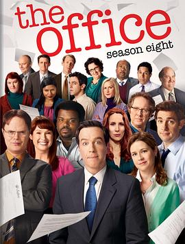

办公室 第八季 / The Office Season 8
又名：爆笑办公室 第八季 / 美版办公室 第八季
Michael真就一集都没出现过，不过依然精彩，Andy-Erin CP还能不能嗑了
作品信息
| 导演 | B·J·诺瓦克 / 马特·佐恩 / 戴维·罗杰斯 |
| 编剧 | 格雷格·丹尼尔斯 / B·J·诺瓦克 |
| 主演 | 约翰·卡拉辛斯基 / 雷恩·威尔森 / 珍娜·费舍 / B·J·诺瓦克 / 艾德·赫尔姆斯 / 莱斯利·大卫·贝克 / 布莱恩·鲍姆加特纳 / 安吉拉·金赛 / 敏迪·卡灵 / 奥斯卡·努内斯 / 菲利丝·史密斯 / 凯特·弗兰纳里 / 克瑞德·布拉顿 / 艾丽·坎伯尔 / 保罗·立博斯坦 / 克雷格·罗宾森 / 扎克·伍兹 / 詹姆斯·斯派德 / 林赛·布罗德 / 凯瑟琳·塔特 / 阿米纳·卡普兰 |
| 类型 | 喜剧 |
| 制片国家/地区 | 美国 |
| 语言 | 英语 |
| 首播 | 2011-09-22(美国) |
| 季数 | 8 |
| 集数 | 24 |
| 单集片长 | 22分钟 |
| IMDb | tt2000321 |
说过什么
2022-07-10 21:38:56
看过 · 时间来自广播，短评来自标记页
Michael真就一集都没出现过，不过依然精彩，Andy-Erin CP还能不能嗑了
2022-06-26 09:55:40
广播 · 在看
看这封面我觉得我知道了什么
最后一次看到是 2026-08-01T11:05:04+10:00 · 豆瓣原页